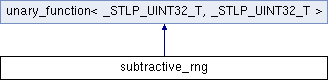

类 subtractive_rng 继承关系图:

Public 成员函数 | |
| _STLP_UINT32_T | operator() (_STLP_UINT32_T __limit) |
| void | _M_initialize (_STLP_UINT32_T __seed) |
| subtractive_rng (unsigned int __seed) | |
额外继承的成员函数 | |
 Public 类型 继承自 unary_function< _STLP_UINT32_T, _STLP_UINT32_T > Public 类型 继承自 unary_function< _STLP_UINT32_T, _STLP_UINT32_T > | |
| typedef _STLP_UINT32_T | argument_type |
| typedef _STLP_UINT32_T | result_type |
该类的文档由以下文件生成:
- E:/ReactOS-0.4.6/sdk/include/c++/stlport/stl/_function.h